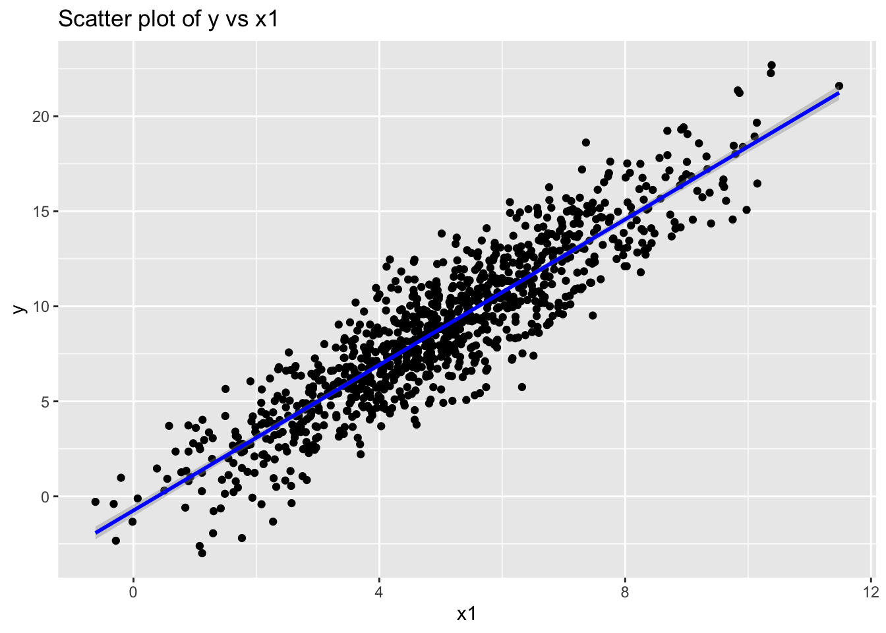
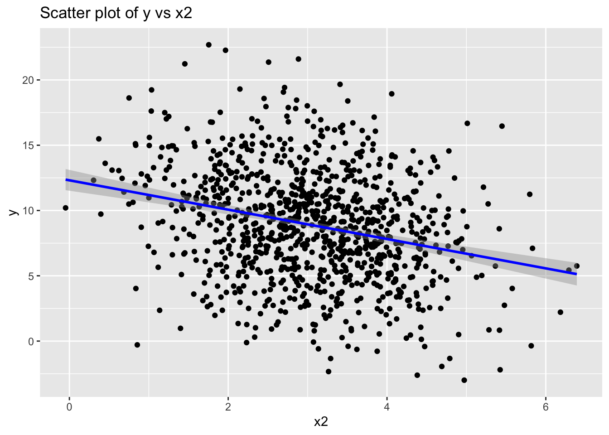
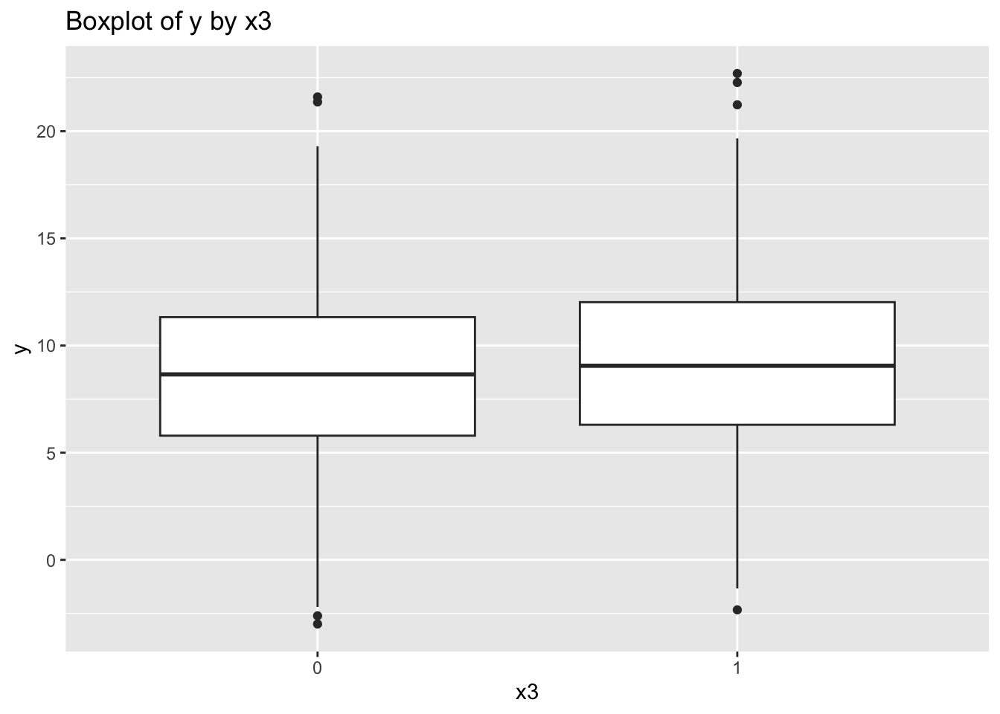

First, I will create a synthetic dataset with multiple variables and some associations between them. I will then explore the data with plots and tables, and fit some simple models to see if they can recover the associations.
The following objects are masked from 'package:stats':
filter, lag
The following objects are masked from 'package:base':
intersect, setdiff, setequal, union
library(ggplot2)# Set seed for reproducibilityset.seed(123)# Generate synthetic datasetn <-1000x1 <-rnorm(n, mean =5, sd =2)x2 <-rnorm(n, mean =3, sd =1)x3 <-rbinom(n, 1, 0.5)y <-3+2* x1 -1.5* x2 +0.8* x3 +rnorm(n)# Create data framedf <-data.frame(y, x1, x2, x3)# Explore the datasetsummary(df)
y x1 x2 x3
Min. :-2.994 Min. :-0.6195 Min. :-0.04786 Min. :0.000
1st Qu.: 6.049 1st Qu.: 3.7434 1st Qu.: 2.34678 1st Qu.:0.000
Median : 8.906 Median : 5.0184 Median : 3.05485 Median :0.000
Mean : 8.893 Mean : 5.0323 Mean : 3.04246 Mean :0.489
3rd Qu.:11.557 3rd Qu.: 6.3292 3rd Qu.: 3.75345 3rd Qu.:1.000
Max. :22.691 Max. :11.4821 Max. : 6.39037 Max. :1.000
# Plot y against x1ggplot(df, aes(x = x1, y = y)) +geom_point() +geom_smooth(method ="lm", col ="blue") +labs(title ="Scatter plot of y vs x1")
`geom_smooth()` using formula = 'y ~ x'

# Plot y against x2ggplot(df, aes(x = x2, y = y)) +geom_point() +geom_smooth(method ="lm", col ="blue") +labs(title ="Scatter plot of y vs x2")
`geom_smooth()` using formula = 'y ~ x'

# Boxplot of y by x3ggplot(df, aes(x =as.factor(x3), y = y)) +geom_boxplot() +labs(title ="Boxplot of y by x3", x ="x3")

Scatter plot of y vs x1: This plot shows a positive linear relationship between x1 and y. As x1 increases, y also tends to increase. The fitted line, shown in blue, confirms this positive correlation.
Scatter plot of y vs x2: This plot shows a slight negative linear relationship between x2 and y. As x2 increases, y tends to decrease slightly. The fitted line, shown in blue, indicates this negative correlation.
Boxplot of y by x3: This boxplot shows the distribution of y for two categories of x3 (0 and 1). The median y value appears to be slightly higher for x3 = 1 compared to x3 = 0, indicating a potential difference in y based on the category of x3.
Overall, the plots confirm the expected relationships in the synthetic data, with x1 having a positive association with y, x2 having a negative association with y, and x3 showing some differences in y based on its category.
Now I will fit three linear models to explore the relationships in the synthetic dataset.
Fit Simple Models
Linear Model
# Fit a linear modelmodel <-lm(y ~ x1 + x2 + x3, data = df)summary(model)
Call:
lm(formula = y ~ x1 + x2 + x3, data = df)
Residuals:
Min 1Q Median 3Q Max
-3.0422 -0.6685 -0.0369 0.6641 3.3416
Coefficients:
Estimate Std. Error t value Pr(>|t|)
(Intercept) 3.00272 0.12866 23.34 <2e-16 ***
x1 1.98449 0.01603 123.83 <2e-16 ***
x2 -1.45520 0.03147 -46.24 <2e-16 ***
x3 0.67653 0.06333 10.68 <2e-16 ***
---
Signif. codes: 0 '***' 0.001 '**' 0.01 '*' 0.05 '.' 0.1 ' ' 1
Residual standard error: 1 on 996 degrees of freedom
Multiple R-squared: 0.9436, Adjusted R-squared: 0.9434
F-statistic: 5554 on 3 and 996 DF, p-value: < 2.2e-16
Summary:
Intercept: 3.00272
x1 coefficient: 1.98449
x2 coefficient: -1.45520
x3 coefficient: 0.67653
Multiple R-squared: 0.9436
Interpretation
The first model (linear) shows strong relationships with significant coefficients for all variables.
Explore Model Coefficients
# Print the coefficients of the linear modelcat("Coefficients of the linear model:\n")
The second model (polynomial) adds quadratic terms for x1 and x2, but the additional complexity does not significantly improve the model, as the quadratic terms are not significant.
Interaction Model
# Fit a model with interaction termsmodel_interact <-lm(y ~ x1 * x2 + x1 * x3 + x2 * x3, data = df)summary(model_interact)
Call:
lm(formula = y ~ x1 * x2 + x1 * x3 + x2 * x3, data = df)
Residuals:
Min 1Q Median 3Q Max
-3.0441 -0.6361 -0.0548 0.6617 3.3446
Coefficients:
Estimate Std. Error t value Pr(>|t|)
(Intercept) 2.67485 0.31034 8.619 < 2e-16 ***
x1 2.04367 0.05427 37.660 < 2e-16 ***
x2 -1.33398 0.09360 -14.251 < 2e-16 ***
x3 0.67439 0.24948 2.703 0.00698 **
x1:x2 -0.02194 0.01589 -1.381 0.16759
x1:x3 0.01434 0.03215 0.446 0.65569
x2:x3 -0.02219 0.06320 -0.351 0.72551
---
Signif. codes: 0 '***' 0.001 '**' 0.01 '*' 0.05 '.' 0.1 ' ' 1
Residual standard error: 1.001 on 993 degrees of freedom
Multiple R-squared: 0.9437, Adjusted R-squared: 0.9434
F-statistic: 2775 on 6 and 993 DF, p-value: < 2.2e-16
Summary:
Intercept: 2.67485
x1 coefficient: 2.04367
x2 coefficient: -1.33398
x3 coefficient: 0.67439
x1
interaction: -0.02194 (not significant)
x1
interaction: 0.01434 (not significant)
x2
interaction: -0.02219 (not significant)
Multiple R-squared: 0.9437
Interpretation
The third model (interaction) introduces interaction terms, but they are not significant, indicating no substantial interaction effects between the variables.
Conclusion
This R code generates a synthetic dataset with multiple variables and known associations, explores the data with plots and tables, and fits several simple models to recover the associations. The linear model should reveal the coefficients that were built into the data generation process, while the polynomial and interaction models allow us to explore more complex relationships.
Overall, the linear model successfully captures the main associations between the variables and y, while additional complexity from polynomial and interaction terms does not significantly enhance the model’s explanatory power.